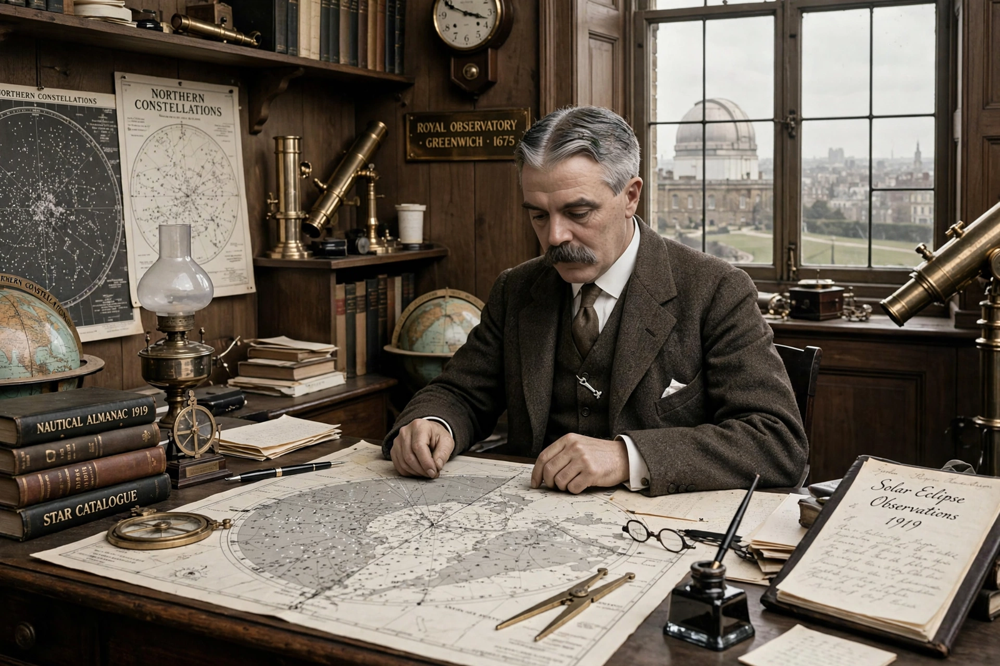

| Sir Frank Watson Dyson | |
|---|---|
| Born | 8 January 1868, Measham, Leicestershire, England |
| Died | 25 May 1939 (aged 71), at sea |
| Office | 9th Astronomer Royal (1910–1933); Astronomer Royal for Scotland (1905–1910) |
| Known for | 1919 eclipse expeditions testing general relativity; BBC time signal ("pips") |

Sir Frank Watson Dyson (8 January 1868 – 25 May 1939) was an English astronomer and the ninth Astronomer Royal, serving from 1910 to 1933. Educated at Bradford Grammar School and Trinity College, Cambridge, he worked first at the Royal Observatory, Greenwich, then as Astronomer Royal for Scotland at Edinburgh, before returning to Greenwich as its director.
Dyson is remembered chiefly for organising the two British expeditions that observed the total solar eclipse of 29 May 1919 — one led by Arthur Eddington to Príncipe, the other by Andrew Crommelin to Sobral, Brazil. The measurements of starlight deflected by the Sun's gravity agreed with Albert Einstein's general theory of relativity, and Dyson announced the results to a joint meeting of the Royal Society and Royal Astronomical Society in November 1919, making Einstein world-famous overnight. Dyson himself insisted the expeditions proceed despite the First World War.
At Greenwich, Dyson introduced the wireless distribution of time signals and proposed the BBC's "six pips" Greenwich Time Signal (first broadcast 1924). He worked on stellar proper motions, eclipse spectroscopy and the solar corona. He died aboard ship returning from Australia in 1939 and was succeeded at Greenwich by Harold Spencer Jones. His predecessors in the post included George Biddell Airy and William Christie.